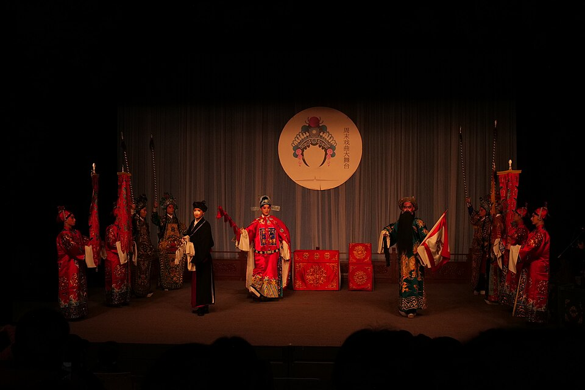
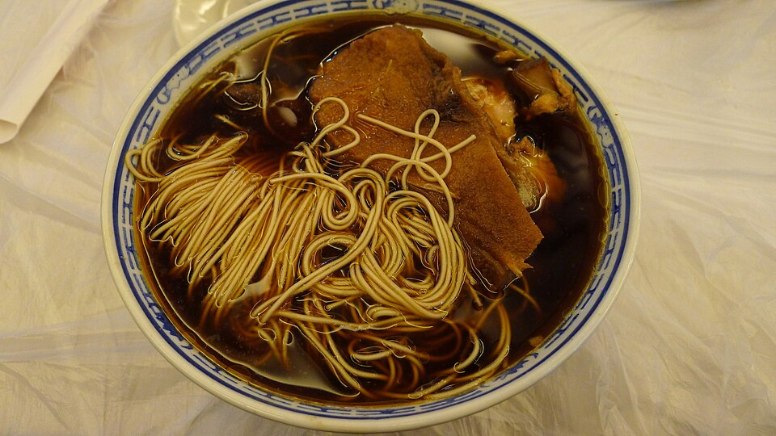

Browse the fragments
Filter Places, Artifacts, Food, Traditions and Stories. Select any card or photo marker.
PLACES · CRAFT · FOOD · LIVING HERITAGE
Discover 82 evidence-linked cultural records across Kunshan. Follow places, objects, flavours, traditions and stories — then turn your discoveries into a route.


QUICK TUTORIAL
Filter Places, Artifacts, Food, Traditions and Stories. Select any card or photo marker.
Open Patterns to compare categories and explore evidence-linked cultural relationships.
Add two or more records, then compare the fastest, scenic and convenient route options.